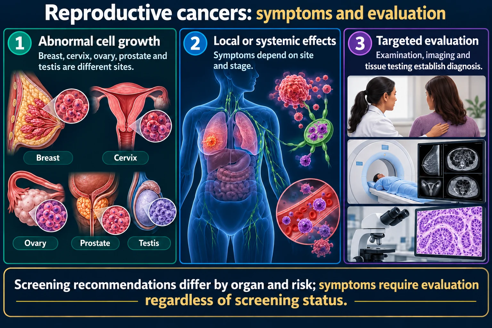

One is old and slow, one is young and fast. Opposite ages, opposite tempos.

Old and slow, or young and fast. Nearly every feature of these two is the mirror image of the other.
Screening recommendations differ by organ and risk; symptoms require evaluation regardless of screening status.
Abnormal cell growth
Breast, cervix, ovary, prostate and testis are different sites.
Local or systemic effects
Symptoms depend on site and stage.
Targeted evaluation
Examination, imaging and tissue testing establish diagnosis.
Breast and gynecologic clues
A new mass, unexpected bleeding or persistent pelvic symptoms deserves evaluation.
Prostate and testicular clues
Urinary symptoms or a testicular mass require assessment; neither is diagnostic alone.
Treatment
Stage, biology and patient preferences guide surgery, radiation or systemic therapy.
Pairing these two makes both stick, because nearly every feature is a mirror image.
| Prostate | Testicular | |
|---|---|---|
| Typical age | Over 65 | 15–35 — young men |
| Tempo | Usually slow-growing | Fast-growing |
| First sign | Often none; urinary changes later | Painless firm lump or heaviness |
| Detected by | PSA and digital rectal exam | Self-examination |
| Spreads to | Bone — pelvis, spine, ribs | Lymph nodes, lungs |
| Outlook | Good when confined | Very high cure rate, even when spread |
Old and slow versus young and fast. If a stem gives you a 25-year-old with a scrotal lump, it is not prostate. If it gives you a 70-year-old with back pain and trouble starting his stream, think prostate with bone metastasis.
Early prostate cancer causes no symptoms at all. When urinary symptoms do appear they are the same ones benign enlargement causes, which is exactly why they get dismissed.
Symptoms, when they come
| BPH — benign | Prostate cancer | |
|---|---|---|
| On rectal exam | Smooth, rubbery, symmetrically enlarged | Hard, irregular, nodular, asymmetric |
| Course | Gradual urinary symptoms | Silent, then urinary or bone symptoms |
| PSA | Can be mildly raised | Often higher, and rising over time |
Treatment and its costs
The most common solid cancer in men aged 15–35, and one of the most curable cancers there is — if it is found. Finding it depends almost entirely on the man noticing it himself.
Signs
Painless again. Young men expect cancer to hurt and wait, and this one does not wait with them.
Risk factors
Normal anatomy that gets mistaken for a lump: the epididymis is a soft, comma-shaped structure along the back of each testis, and one testis normally hangs slightly lower than the other. Say both out loud when teaching, or the man finds his own epididymis and panics — or worse, assumes every lump is normal.
Say the awkward part. These are young men who will not raise body image, sexual function or fertility on their own. Raise it first, matter-of-factly, and the conversation becomes possible.
These newly drawn concept diagrams consolidate the retired illustration sets. The accompanying study notes and original handout links remain on this page.